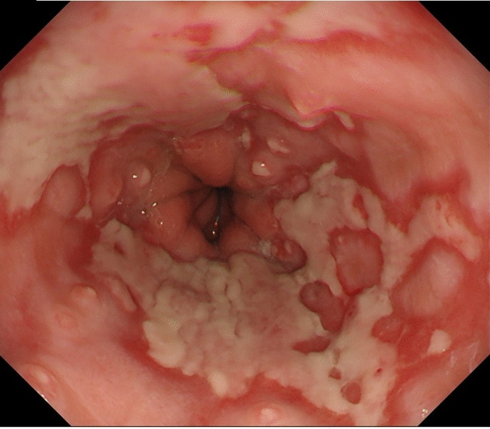
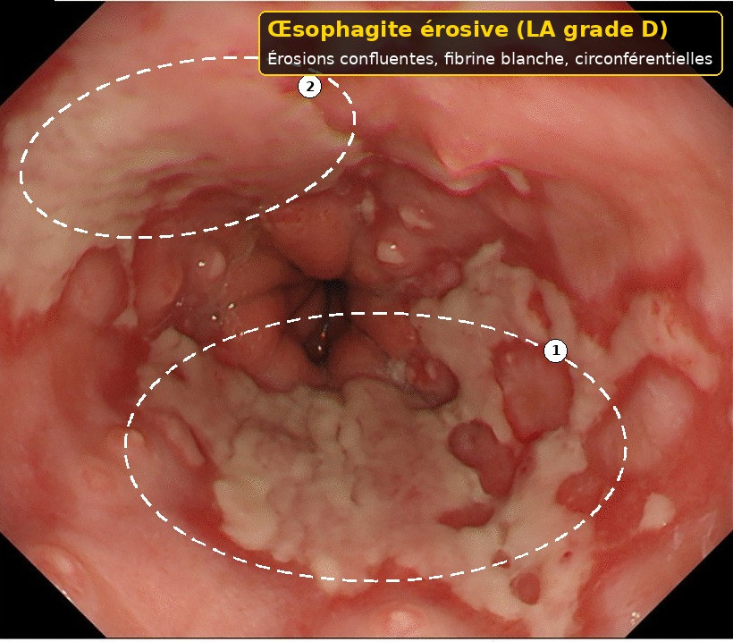
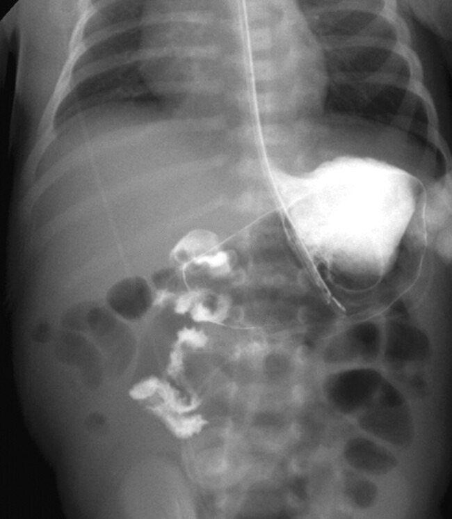
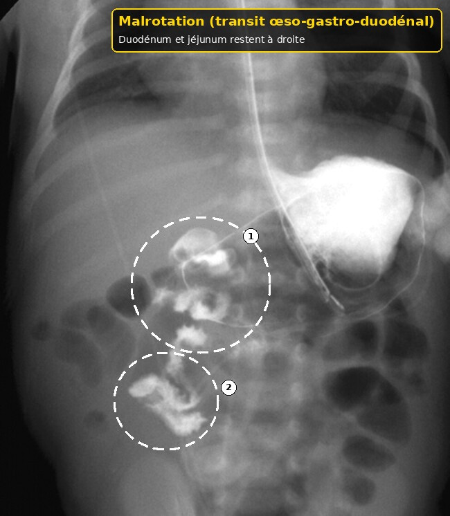

Reflux gastro-œsophagien du nourrisson
Taille : mesurée par le script du dépôt.
L'essentiel
Reflux gastro-œsophagien du nourrisson : les critères, les signes d'alarme et les doses lues sont dans les fenêtres.
1. Définition
Le détail est dans la fenêtre.
Le reflux gastro-œsophagien est la remontée du contenu gastrique.5
Il devient une maladie quand les symptômes gênent ou qu'une complication est là.5
Chez le nourrisson, dire qu'un pleur est gênant est difficile, car il ne parle pas.5
Les régurgitations visibles d'un enfant sain ne sont pas, à elles seules, une maladie.5
Le guide de 2018 sépare donc le reflux simple de la maladie de reflux.5
À l'arrivée, pour Reflux gastro-œsophagien du nourrisson, on décrit l'heure du rejet par rapport au repas.
À l'arrivée, pour Reflux gastro-œsophagien du nourrisson, on palpe le ventre.
À l'arrivée, pour Reflux gastro-œsophagien du nourrisson, on reprend l'histoire si les symptômes commencent après 6 mois.
Après le déshabillage, pour Reflux gastro-œsophagien du nourrisson, on n'applique pas cette ligne à un nourrisson qui pleure seulement.
Après le déshabillage, pour Reflux gastro-œsophagien du nourrisson, on documente l'absence de fièvre.
Avant l'ordonnance, pour Reflux gastro-œsophagien du nourrisson, on rappelle l'absence de dose avant 10 kg.
Avant l'ordonnance, pour Reflux gastro-œsophagien du nourrisson, on ne couche pas dans le lit des parents de façon non sûre pour diminuer un reflux.
Si le cri persiste, pour Reflux gastro-œsophagien du nourrisson, on cite la recommandation 5.5 si l'on est tenté par l'acide.
Si le cri persiste, pour Reflux gastro-œsophagien du nourrisson, on ne multiplie pas les épaississants.
Avant le retour à domicile, pour Reflux gastro-œsophagien du nourrisson, on vérifie les volumes biberonnés.
Avant le retour à domicile, pour Reflux gastro-œsophagien du nourrisson, on fixe un contrôle de poids.
Quand la famille rappelle, pour Reflux gastro-œsophagien du nourrisson, on ne fait pas d'un inhibiteur un test.
Quand la famille rappelle, pour Reflux gastro-œsophagien du nourrisson, on explique que l'arc-boutement n'est pas spécifique.
Dans le compte rendu, pour Reflux gastro-œsophagien du nourrisson, on cherche un signe d'alarme du guide de 2018.
Dans le compte rendu, pour Reflux gastro-œsophagien du nourrisson, on pense au pylore si le jet se répète avant 2 mois.
Si un signe nouveau apparaît, pour Reflux gastro-œsophagien du nourrisson, on décrit l'heure du rejet par rapport au repas.
Si un signe nouveau apparaît, pour Reflux gastro-œsophagien du nourrisson, on palpe le ventre.
Si un signe nouveau apparaît, pour Reflux gastro-œsophagien du nourrisson, on reprend l'histoire si les symptômes commencent après 6 mois.
À la visite de contrôle, pour Reflux gastro-œsophagien du nourrisson, on n'applique pas cette ligne à un nourrisson qui pleure seulement.
À la visite de contrôle, pour Reflux gastro-œsophagien du nourrisson, on documente l'absence de fièvre.
2. Épidémiologie
Le détail est dans la fenêtre.
Les régurgitations sont fréquentes au premier semestre et régressent souvent ensuite.5
Un début après 6 mois, ou une persistance au-delà de 12 à 18 mois, fait chercher autre chose.5
Le recouvrement avec l'allergie au lait est décrit en 2024 comme inférieur à 1 pour cent.5
On ne transforme pas cette rareté en certitude devant un enfant malade.5
Aucune série suisse de ce LOT ne donne la part des pleurs due au seul reflux.5
À l'arrivée, pour Reflux gastro-œsophagien du nourrisson, on regarde si la courbe est dans son couloir.
À l'arrivée, pour Reflux gastro-œsophagien du nourrisson, on demande la couleur verte ou non.
À l'arrivée, pour Reflux gastro-œsophagien du nourrisson, on reprend l'histoire s'ils durent au-delà de 12 mois.
Après le déshabillage, pour Reflux gastro-œsophagien du nourrisson, on écoute le cœur et les fémorales.
Après le déshabillage, pour Reflux gastro-œsophagien du nourrisson, on refuse une ordonnance de convenance.
Avant l'ordonnance, pour Reflux gastro-œsophagien du nourrisson, on réserve 10 mg pendant 8 semaines à l'œsophagite sévère de l'enfant déjà plus grand.
Avant l'ordonnance, pour Reflux gastro-œsophagien du nourrisson, on documente l'absence de sang.
Si le cri persiste, pour Reflux gastro-œsophagien du nourrisson, on rappelle l'absence de dose de Nexium avant 1 an.
Si le cri persiste, pour Reflux gastro-œsophagien du nourrisson, on évite le tabac dans la pièce.
Avant le retour à domicile, pour Reflux gastro-œsophagien du nourrisson, on ne verticalise pas au prix d'un siège qui plie le tronc.
Avant le retour à domicile, pour Reflux gastro-œsophagien du nourrisson, on écrit ce qui ferait adresser.
Quand la famille rappelle, pour Reflux gastro-œsophagien du nourrisson, on garde le dos pour le sommeil.
Quand la famille rappelle, pour Reflux gastro-œsophagien du nourrisson, on nomme le Sandifer seulement si le cou est dystonique.
Dans le compte rendu, pour Reflux gastro-œsophagien du nourrisson, on ne lance pas d'endoscopie sans retentissement.
Dans le compte rendu, pour Reflux gastro-œsophagien du nourrisson, on pense à l'allergie seulement avec un symptôme de plus.
Si un signe nouveau apparaît, pour Reflux gastro-œsophagien du nourrisson, on regarde si la courbe est dans son couloir.
Si un signe nouveau apparaît, pour Reflux gastro-œsophagien du nourrisson, on demande la couleur verte ou non.
Si un signe nouveau apparaît, pour Reflux gastro-œsophagien du nourrisson, on reprend l'histoire s'ils durent au-delà de 12 mois.
À la visite de contrôle, pour Reflux gastro-œsophagien du nourrisson, on écoute le cœur et les fémorales.
À la visite de contrôle, pour Reflux gastro-œsophagien du nourrisson, on refuse une ordonnance de convenance.
3. Physiopathologie
Le détail est dans la fenêtre.
La barrière anti-reflux du nourrisson est immature, et les repas sont liquides et fréquents.5
L'arc-boutement et les pleurs existent avec et sans maladie de reflux.5
Le syndrome de Sandifer est une posture dystonique du cou, citée en 2018.5
Une œsophagite est une complication muqueuse, pas un synonyme de régurgitation.5
Six études avant 12 mois n'ont pas montré de gain des inhibiteurs sur les pleurs.5
À l'arrivée, pour Reflux gastro-œsophagien du nourrisson, on cherche un signe d'alarme du guide de 2018.
À l'arrivée, pour Reflux gastro-œsophagien du nourrisson, on pense au pylore si le jet se répète avant 2 mois.
Après le déshabillage, pour Reflux gastro-œsophagien du nourrisson, on décrit l'heure du rejet par rapport au repas.
Après le déshabillage, pour Reflux gastro-œsophagien du nourrisson, on palpe le ventre.
Après le déshabillage, pour Reflux gastro-œsophagien du nourrisson, on reprend l'histoire si les symptômes commencent après 6 mois.
Avant l'ordonnance, pour Reflux gastro-œsophagien du nourrisson, on n'applique pas cette ligne à un nourrisson qui pleure seulement.
Avant l'ordonnance, pour Reflux gastro-œsophagien du nourrisson, on documente l'absence de fièvre.
Si le cri persiste, pour Reflux gastro-œsophagien du nourrisson, on rappelle l'absence de dose avant 10 kg.
Si le cri persiste, pour Reflux gastro-œsophagien du nourrisson, on ne couche pas dans le lit des parents de façon non sûre pour diminuer un reflux.
Avant le retour à domicile, pour Reflux gastro-œsophagien du nourrisson, on cite la recommandation 5.5 si l'on est tenté par l'acide.
Avant le retour à domicile, pour Reflux gastro-œsophagien du nourrisson, on ne multiplie pas les épaississants.
Quand la famille rappelle, pour Reflux gastro-œsophagien du nourrisson, on vérifie les volumes biberonnés.
Quand la famille rappelle, pour Reflux gastro-œsophagien du nourrisson, on fixe un contrôle de poids.
Dans le compte rendu, pour Reflux gastro-œsophagien du nourrisson, on ne fait pas d'un inhibiteur un test.
Dans le compte rendu, pour Reflux gastro-œsophagien du nourrisson, on explique que l'arc-boutement n'est pas spécifique.
Si un signe nouveau apparaît, pour Reflux gastro-œsophagien du nourrisson, on cherche un signe d'alarme du guide de 2018.
Si un signe nouveau apparaît, pour Reflux gastro-œsophagien du nourrisson, on pense au pylore si le jet se répète avant 2 mois.
À la visite de contrôle, pour Reflux gastro-œsophagien du nourrisson, on décrit l'heure du rejet par rapport au repas.
À la visite de contrôle, pour Reflux gastro-œsophagien du nourrisson, on palpe le ventre.
À la visite de contrôle, pour Reflux gastro-œsophagien du nourrisson, on reprend l'histoire si les symptômes commencent après 6 mois.
4. Démarche diagnostique
Le détail est dans la fenêtre.
On décrit le moment du rejet, le volume, et si le lait est caillé ou vert.5
On regarde la courbe, l'inconfort pendant la tétée et les signes d'alarme du tableau de 2018.5
Sans signe d'alarme et sans retentissement, on n'ouvre pas d'examen.5
On n'utilise pas un inhibiteur comme test diagnostique chez le nourrisson.5
On écrit ce qui ferait changer d'avis au contrôle.5
À l'arrivée, pour Reflux gastro-œsophagien du nourrisson, on ne lance pas d'endoscopie sans retentissement.
À l'arrivée, pour Reflux gastro-œsophagien du nourrisson, on pense à l'allergie seulement avec un symptôme de plus.
Après le déshabillage, pour Reflux gastro-œsophagien du nourrisson, on regarde si la courbe est dans son couloir.
Après le déshabillage, pour Reflux gastro-œsophagien du nourrisson, on demande la couleur verte ou non.
Après le déshabillage, pour Reflux gastro-œsophagien du nourrisson, on reprend l'histoire s'ils durent au-delà de 12 mois.
Avant l'ordonnance, pour Reflux gastro-œsophagien du nourrisson, on écoute le cœur et les fémorales.
Avant l'ordonnance, pour Reflux gastro-œsophagien du nourrisson, on refuse une ordonnance de convenance.
Si le cri persiste, pour Reflux gastro-œsophagien du nourrisson, on réserve 10 mg pendant 8 semaines à l'œsophagite sévère de l'enfant déjà plus grand.
Si le cri persiste, pour Reflux gastro-œsophagien du nourrisson, on documente l'absence de sang.
Avant le retour à domicile, pour Reflux gastro-œsophagien du nourrisson, on rappelle l'absence de dose de Nexium avant 1 an.
Avant le retour à domicile, pour Reflux gastro-œsophagien du nourrisson, on évite le tabac dans la pièce.
Quand la famille rappelle, pour Reflux gastro-œsophagien du nourrisson, on ne verticalise pas au prix d'un siège qui plie le tronc.
Quand la famille rappelle, pour Reflux gastro-œsophagien du nourrisson, on écrit ce qui ferait adresser.
Dans le compte rendu, pour Reflux gastro-œsophagien du nourrisson, on garde le dos pour le sommeil.
Dans le compte rendu, pour Reflux gastro-œsophagien du nourrisson, on nomme le Sandifer seulement si le cou est dystonique.
Si un signe nouveau apparaît, pour Reflux gastro-œsophagien du nourrisson, on ne lance pas d'endoscopie sans retentissement.
Si un signe nouveau apparaît, pour Reflux gastro-œsophagien du nourrisson, on pense à l'allergie seulement avec un symptôme de plus.
À la visite de contrôle, pour Reflux gastro-œsophagien du nourrisson, on regarde si la courbe est dans son couloir.
À la visite de contrôle, pour Reflux gastro-œsophagien du nourrisson, on demande la couleur verte ou non.
À la visite de contrôle, pour Reflux gastro-œsophagien du nourrisson, on reprend l'histoire s'ils durent au-delà de 12 mois.
5. Anamnèse et drapeaux rouges
Le détail est dans la fenêtre.
Perte de poids, léthargie, fièvre et irritabilité extrême sortent du reflux simple.5
Une dysurie fait chercher une infection urinaire.5
Une fontanelle bombée ou des convulsions sortent du cadre digestif.5
Des vomissements en jet et répétés, jusqu'à 2 mois, font chercher une sténose du pylore.5
Un vomissement bilieux est lu comme une occlusion possible.5
Du sang rouge par l'anus ou une distension ne se traitent pas comme un reflux.5
À l'arrivée, pour Reflux gastro-œsophagien du nourrisson, on ne fait pas d'un inhibiteur un test.
À l'arrivée, pour Reflux gastro-œsophagien du nourrisson, on explique que l'arc-boutement n'est pas spécifique.
Après le déshabillage, pour Reflux gastro-œsophagien du nourrisson, on cherche un signe d'alarme du guide de 2018.
Après le déshabillage, pour Reflux gastro-œsophagien du nourrisson, on pense au pylore si le jet se répète avant 2 mois.
Avant l'ordonnance, pour Reflux gastro-œsophagien du nourrisson, on décrit l'heure du rejet par rapport au repas.
Avant l'ordonnance, pour Reflux gastro-œsophagien du nourrisson, on palpe le ventre.
Avant l'ordonnance, pour Reflux gastro-œsophagien du nourrisson, on reprend l'histoire si les symptômes commencent après 6 mois.
Si le cri persiste, pour Reflux gastro-œsophagien du nourrisson, on n'applique pas cette ligne à un nourrisson qui pleure seulement.
Si le cri persiste, pour Reflux gastro-œsophagien du nourrisson, on documente l'absence de fièvre.
Avant le retour à domicile, pour Reflux gastro-œsophagien du nourrisson, on rappelle l'absence de dose avant 10 kg.
Avant le retour à domicile, pour Reflux gastro-œsophagien du nourrisson, on ne couche pas dans le lit des parents de façon non sûre pour diminuer un reflux.
Quand la famille rappelle, pour Reflux gastro-œsophagien du nourrisson, on cite la recommandation 5.5 si l'on est tenté par l'acide.
Quand la famille rappelle, pour Reflux gastro-œsophagien du nourrisson, on ne multiplie pas les épaississants.
Dans le compte rendu, pour Reflux gastro-œsophagien du nourrisson, on vérifie les volumes biberonnés.
Dans le compte rendu, pour Reflux gastro-œsophagien du nourrisson, on fixe un contrôle de poids.
Si un signe nouveau apparaît, pour Reflux gastro-œsophagien du nourrisson, on ne fait pas d'un inhibiteur un test.
Si un signe nouveau apparaît, pour Reflux gastro-œsophagien du nourrisson, on explique que l'arc-boutement n'est pas spécifique.
À la visite de contrôle, pour Reflux gastro-œsophagien du nourrisson, on cherche un signe d'alarme du guide de 2018.
À la visite de contrôle, pour Reflux gastro-œsophagien du nourrisson, on pense au pylore si le jet se répète avant 2 mois.
Devant les deux parents, pour Reflux gastro-œsophagien du nourrisson, on décrit l'heure du rejet par rapport au repas.
6. Examen physique
Le détail est dans la fenêtre.
L'enfant qui régurgite et sourit ensuite, avec une courbe normale, est le tableau simple.5
On ausculte le cœur et on palpe les fémorales, car la fatigue alimentaire a d'autres causes.5
On regarde la gorge et les oreilles si la fièvre est présente.5
Un abdomen souple et non distendu rassure davantage qu'un récit de gaz.5
On cherche le Sandifer seulement si la posture du cou est vraiment dystonique.5
À l'arrivée, pour Reflux gastro-œsophagien du nourrisson, on garde le dos pour le sommeil.
À l'arrivée, pour Reflux gastro-œsophagien du nourrisson, on nomme le Sandifer seulement si le cou est dystonique.
Après le déshabillage, pour Reflux gastro-œsophagien du nourrisson, on ne lance pas d'endoscopie sans retentissement.
Après le déshabillage, pour Reflux gastro-œsophagien du nourrisson, on pense à l'allergie seulement avec un symptôme de plus.
Avant l'ordonnance, pour Reflux gastro-œsophagien du nourrisson, on regarde si la courbe est dans son couloir.
Avant l'ordonnance, pour Reflux gastro-œsophagien du nourrisson, on demande la couleur verte ou non.
Avant l'ordonnance, pour Reflux gastro-œsophagien du nourrisson, on reprend l'histoire s'ils durent au-delà de 12 mois.
Si le cri persiste, pour Reflux gastro-œsophagien du nourrisson, on écoute le cœur et les fémorales.
Si le cri persiste, pour Reflux gastro-œsophagien du nourrisson, on refuse une ordonnance de convenance.
Avant le retour à domicile, pour Reflux gastro-œsophagien du nourrisson, on réserve 10 mg pendant 8 semaines à l'œsophagite sévère de l'enfant déjà plus grand.
Avant le retour à domicile, pour Reflux gastro-œsophagien du nourrisson, on documente l'absence de sang.
Quand la famille rappelle, pour Reflux gastro-œsophagien du nourrisson, on rappelle l'absence de dose de Nexium avant 1 an.
Quand la famille rappelle, pour Reflux gastro-œsophagien du nourrisson, on évite le tabac dans la pièce.
Dans le compte rendu, pour Reflux gastro-œsophagien du nourrisson, on ne verticalise pas au prix d'un siège qui plie le tronc.
Dans le compte rendu, pour Reflux gastro-œsophagien du nourrisson, on écrit ce qui ferait adresser.
Si un signe nouveau apparaît, pour Reflux gastro-œsophagien du nourrisson, on garde le dos pour le sommeil.
Si un signe nouveau apparaît, pour Reflux gastro-œsophagien du nourrisson, on nomme le Sandifer seulement si le cou est dystonique.
À la visite de contrôle, pour Reflux gastro-œsophagien du nourrisson, on ne lance pas d'endoscopie sans retentissement.
À la visite de contrôle, pour Reflux gastro-œsophagien du nourrisson, on pense à l'allergie seulement avec un symptôme de plus.
Devant les deux parents, pour Reflux gastro-œsophagien du nourrisson, on regarde si la courbe est dans son couloir.
7. Approche syndromique
Le détail est dans la fenêtre.
Pleurs plus régurgitations plus courbe plate : on ne conclut pas au reflux.5
Pleurs plus eczéma plus sang dans les selles : on pense à l'allergie, pas d'abord à l'acide.5
Pleurs par vagues plus pâleur plus sang : on pense à l'invagination.5
Rejet vert : chirurgie, pas épaississant.5
Arc-boutement isolé chez un enfant qui grossit : le guide de 2018 ne traite pas par l'acide.5
À l'arrivée, pour Reflux gastro-œsophagien du nourrisson, on vérifie les volumes biberonnés.
À l'arrivée, pour Reflux gastro-œsophagien du nourrisson, on fixe un contrôle de poids.
Après le déshabillage, pour Reflux gastro-œsophagien du nourrisson, on ne fait pas d'un inhibiteur un test.
Après le déshabillage, pour Reflux gastro-œsophagien du nourrisson, on explique que l'arc-boutement n'est pas spécifique.
Avant l'ordonnance, pour Reflux gastro-œsophagien du nourrisson, on cherche un signe d'alarme du guide de 2018.
Avant l'ordonnance, pour Reflux gastro-œsophagien du nourrisson, on pense au pylore si le jet se répète avant 2 mois.
Si le cri persiste, pour Reflux gastro-œsophagien du nourrisson, on décrit l'heure du rejet par rapport au repas.
Si le cri persiste, pour Reflux gastro-œsophagien du nourrisson, on palpe le ventre.
Si le cri persiste, pour Reflux gastro-œsophagien du nourrisson, on reprend l'histoire si les symptômes commencent après 6 mois.
Avant le retour à domicile, pour Reflux gastro-œsophagien du nourrisson, on n'applique pas cette ligne à un nourrisson qui pleure seulement.
Avant le retour à domicile, pour Reflux gastro-œsophagien du nourrisson, on documente l'absence de fièvre.
Quand la famille rappelle, pour Reflux gastro-œsophagien du nourrisson, on rappelle l'absence de dose avant 10 kg.
Quand la famille rappelle, pour Reflux gastro-œsophagien du nourrisson, on ne couche pas dans le lit des parents de façon non sûre pour diminuer un reflux.
Dans le compte rendu, pour Reflux gastro-œsophagien du nourrisson, on cite la recommandation 5.5 si l'on est tenté par l'acide.
Dans le compte rendu, pour Reflux gastro-œsophagien du nourrisson, on ne multiplie pas les épaississants.
Si un signe nouveau apparaît, pour Reflux gastro-œsophagien du nourrisson, on vérifie les volumes biberonnés.
Si un signe nouveau apparaît, pour Reflux gastro-œsophagien du nourrisson, on fixe un contrôle de poids.
À la visite de contrôle, pour Reflux gastro-œsophagien du nourrisson, on ne fait pas d'un inhibiteur un test.
À la visite de contrôle, pour Reflux gastro-œsophagien du nourrisson, on explique que l'arc-boutement n'est pas spécifique.
8. Diagnostic positif
Le détail est dans la fenêtre.
Le diagnostic de reflux simple est clinique.5
La maladie de reflux suppose un retentissement ou une complication.5
L'œsophagite se voit par , pas par le seul cri.5


Reconnaître.
- Érosions confluentes recouvertes de fibrine blanche, sur toute la circonférence du bas œsophage : œsophagite peptique sévère, grade D de la classification de Los Angeles.
- Même aspect sur la paroi opposée : les érosions se rejoignent, la muqueuse saine ne forme plus que des îlots rouges.
Endoscopie œsophagienne d'un enfant de 9 ans atteint d'un reflux sévère avec syndrome de Sandifer (figure de l'article).
Pièges. L'œsophagite se voit à l'endoscopie, pas au cri : un nourrisson qui pleure n'a pas forcément d'érosion. On ne lance pas d'endoscopie sans retentissement ni signe d'alarme.
Image : Kato D, Uchida H et al. (Pediatric Surgery International, 2024, figure 1b) — Creative Commons Attribution 4.0 — article en libre accès, consulté le 2026-11-01. Version annotée (pointillés, numéros, cartouche) : œuvre dérivée sous la même licence. Enfant de 9 ans, en attendant une endoscopie de nourrisson sous licence libre.
On ne pose pas le diagnostic parce qu'un médicament a semblé aider un soir.5
On date le critère utilisé, simple ou compliqué.5
À l'arrivée, pour Reflux gastro-œsophagien du nourrisson, on ne verticalise pas au prix d'un siège qui plie le tronc.
À l'arrivée, pour Reflux gastro-œsophagien du nourrisson, on écrit ce qui ferait adresser.
Après le déshabillage, pour Reflux gastro-œsophagien du nourrisson, on garde le dos pour le sommeil.
Après le déshabillage, pour Reflux gastro-œsophagien du nourrisson, on nomme le Sandifer seulement si le cou est dystonique.
Avant l'ordonnance, pour Reflux gastro-œsophagien du nourrisson, on ne lance pas d'endoscopie sans retentissement.
Avant l'ordonnance, pour Reflux gastro-œsophagien du nourrisson, on pense à l'allergie seulement avec un symptôme de plus.
Si le cri persiste, pour Reflux gastro-œsophagien du nourrisson, on regarde si la courbe est dans son couloir.
Si le cri persiste, pour Reflux gastro-œsophagien du nourrisson, on demande la couleur verte ou non.
Si le cri persiste, pour Reflux gastro-œsophagien du nourrisson, on reprend l'histoire s'ils durent au-delà de 12 mois.
Avant le retour à domicile, pour Reflux gastro-œsophagien du nourrisson, on écoute le cœur et les fémorales.
Avant le retour à domicile, pour Reflux gastro-œsophagien du nourrisson, on refuse une ordonnance de convenance.
Quand la famille rappelle, pour Reflux gastro-œsophagien du nourrisson, on réserve 10 mg pendant 8 semaines à l'œsophagite sévère de l'enfant déjà plus grand.
Quand la famille rappelle, pour Reflux gastro-œsophagien du nourrisson, on documente l'absence de sang.
Dans le compte rendu, pour Reflux gastro-œsophagien du nourrisson, on rappelle l'absence de dose de Nexium avant 1 an.
Dans le compte rendu, pour Reflux gastro-œsophagien du nourrisson, on évite le tabac dans la pièce.
Si un signe nouveau apparaît, pour Reflux gastro-œsophagien du nourrisson, on ne verticalise pas au prix d'un siège qui plie le tronc.
Si un signe nouveau apparaît, pour Reflux gastro-œsophagien du nourrisson, on écrit ce qui ferait adresser.
À la visite de contrôle, pour Reflux gastro-œsophagien du nourrisson, on garde le dos pour le sommeil.
À la visite de contrôle, pour Reflux gastro-œsophagien du nourrisson, on nomme le Sandifer seulement si le cou est dystonique.
9. Examens complémentaires
Le détail est dans la fenêtre.
Le et l'échographie servent à écarter une anomalie anatomique, pas à mesurer l'acide.5


Reconnaître.
- Le duodénum reste à droite et ne croise pas la ligne médiane : pas d'angle duodéno-jéjunal à sa place, à gauche du rachis.
- Les premières anses du jéjunum restent elles aussi dans le flanc droit : c'est l'anomalie de position qui signe la malrotation.
Transit œso-gastro-duodénal de face d'un nouveau-né à terme au troisième jour de vie (figure de l'article). Sur la brute, le cercle jaune de l'auteur a été effacé ; le cercle 1 reprend sa position.
Pièges. Le transit cherche une anomalie anatomique ; il ne mesure pas l'acide. Un vomissement vert impose de chercher cette anomalie sans attendre.
Image : Ganeshan S, Zakka K. R. et al. (American Journal of Perinatology Reports, 2026, figure 2) — Creative Commons Attribution 4.0 — article en libre accès, consulté le 2026-11-01. Version annotée (pointillés, numéros, cartouche) : œuvre dérivée sous la même licence.
L'endoscopie se discute devant un saignement, une cassure ou un doute d'autre maladie.5
La pH-métrie n'est pas le premier geste d'un nourrisson qui pleure et grossit.5
On n'hospitalise pas pour une régurgitation isolée.5
On documente le poids du jour.5
À l'arrivée, pour Reflux gastro-œsophagien du nourrisson, on cite la recommandation 5.5 si l'on est tenté par l'acide.
À l'arrivée, pour Reflux gastro-œsophagien du nourrisson, on ne multiplie pas les épaississants.
Après le déshabillage, pour Reflux gastro-œsophagien du nourrisson, on vérifie les volumes biberonnés.
Après le déshabillage, pour Reflux gastro-œsophagien du nourrisson, on fixe un contrôle de poids.
Avant l'ordonnance, pour Reflux gastro-œsophagien du nourrisson, on ne fait pas d'un inhibiteur un test.
Avant l'ordonnance, pour Reflux gastro-œsophagien du nourrisson, on explique que l'arc-boutement n'est pas spécifique.
Si le cri persiste, pour Reflux gastro-œsophagien du nourrisson, on cherche un signe d'alarme du guide de 2018.
Si le cri persiste, pour Reflux gastro-œsophagien du nourrisson, on pense au pylore si le jet se répète avant 2 mois.
Avant le retour à domicile, pour Reflux gastro-œsophagien du nourrisson, on décrit l'heure du rejet par rapport au repas.
Avant le retour à domicile, pour Reflux gastro-œsophagien du nourrisson, on palpe le ventre.
Avant le retour à domicile, pour Reflux gastro-œsophagien du nourrisson, on reprend l'histoire si les symptômes commencent après 6 mois.
Quand la famille rappelle, pour Reflux gastro-œsophagien du nourrisson, on n'applique pas cette ligne à un nourrisson qui pleure seulement.
Quand la famille rappelle, pour Reflux gastro-œsophagien du nourrisson, on documente l'absence de fièvre.
Dans le compte rendu, pour Reflux gastro-œsophagien du nourrisson, on rappelle l'absence de dose avant 10 kg.
Dans le compte rendu, pour Reflux gastro-œsophagien du nourrisson, on ne couche pas dans le lit des parents de façon non sûre pour diminuer un reflux.
Si un signe nouveau apparaît, pour Reflux gastro-œsophagien du nourrisson, on cite la recommandation 5.5 si l'on est tenté par l'acide.
Si un signe nouveau apparaît, pour Reflux gastro-œsophagien du nourrisson, on ne multiplie pas les épaississants.
À la visite de contrôle, pour Reflux gastro-œsophagien du nourrisson, on vérifie les volumes biberonnés.
À la visite de contrôle, pour Reflux gastro-œsophagien du nourrisson, on fixe un contrôle de poids.
10. Arbre décisionnel
Le détail est dans la fenêtre.
Schéma interactif
Le schéma montre trois voies : rassurer, chercher une allergie, ou adresser.5
La voie rassurer exige une courbe normale et zéro signe d'alarme.5
La voie allergie exige un symptôme de plus que le cri, selon le texte de 2024.5
La voie adresse s'ouvre sur le sang, le vert, la fièvre ou la fontanelle.5
On ne mélange pas ces voies dans la même ordonnance.5
À l'arrivée, pour Reflux gastro-œsophagien du nourrisson, on rappelle l'absence de dose de Nexium avant 1 an.
À l'arrivée, pour Reflux gastro-œsophagien du nourrisson, on évite le tabac dans la pièce.
Après le déshabillage, pour Reflux gastro-œsophagien du nourrisson, on ne verticalise pas au prix d'un siège qui plie le tronc.
Après le déshabillage, pour Reflux gastro-œsophagien du nourrisson, on écrit ce qui ferait adresser.
Avant l'ordonnance, pour Reflux gastro-œsophagien du nourrisson, on garde le dos pour le sommeil.
Avant l'ordonnance, pour Reflux gastro-œsophagien du nourrisson, on nomme le Sandifer seulement si le cou est dystonique.
Si le cri persiste, pour Reflux gastro-œsophagien du nourrisson, on ne lance pas d'endoscopie sans retentissement.
Si le cri persiste, pour Reflux gastro-œsophagien du nourrisson, on pense à l'allergie seulement avec un symptôme de plus.
Avant le retour à domicile, pour Reflux gastro-œsophagien du nourrisson, on regarde si la courbe est dans son couloir.
Avant le retour à domicile, pour Reflux gastro-œsophagien du nourrisson, on demande la couleur verte ou non.
Avant le retour à domicile, pour Reflux gastro-œsophagien du nourrisson, on reprend l'histoire s'ils durent au-delà de 12 mois.
Quand la famille rappelle, pour Reflux gastro-œsophagien du nourrisson, on écoute le cœur et les fémorales.
Quand la famille rappelle, pour Reflux gastro-œsophagien du nourrisson, on refuse une ordonnance de convenance.
Dans le compte rendu, pour Reflux gastro-œsophagien du nourrisson, on réserve 10 mg pendant 8 semaines à l'œsophagite sévère de l'enfant déjà plus grand.
Dans le compte rendu, pour Reflux gastro-œsophagien du nourrisson, on documente l'absence de sang.
Si un signe nouveau apparaît, pour Reflux gastro-œsophagien du nourrisson, on rappelle l'absence de dose de Nexium avant 1 an.
Si un signe nouveau apparaît, pour Reflux gastro-œsophagien du nourrisson, on évite le tabac dans la pièce.
À la visite de contrôle, pour Reflux gastro-œsophagien du nourrisson, on ne verticalise pas au prix d'un siège qui plie le tronc.
À la visite de contrôle, pour Reflux gastro-œsophagien du nourrisson, on écrit ce qui ferait adresser.
11. Prise en charge
Le détail est dans la fenêtre.
On fractionne les repas seulement si les volumes sont vraiment excessifs, et on surveille la courbe.5
On garde le nourrisson vertical après la tétée, sans position ventrale pour dormir.5
La recommandation 5.5 de 2018 déconseille l'anti-H2 et l'inhibiteur pour une régurgitation de nourrisson sain.5
Nexium, autorisation 58091, ne doit pas être utilisé avant 1 an ni sous 10 kg.5
Chez l'enfant de 1 à 11 ans, avec œsophagite sévère et poids sous 20 kg mais d'au moins 10 kg, le texte lit 10 mg une fois par jour pendant 8 semaines.5
Les doses au-dessus de 1 mg par kilogramme et par jour n'ont pas été étudiées.5
Cette ligne ne s'applique pas au nourrisson qui pleure sans œsophagite.5
À l'arrivée, pour Reflux gastro-œsophagien du nourrisson, on rappelle l'absence de dose avant 10 kg.
À l'arrivée, pour Reflux gastro-œsophagien du nourrisson, on ne couche pas dans le lit des parents de façon non sûre pour diminuer un reflux.
Après le déshabillage, pour Reflux gastro-œsophagien du nourrisson, on cite la recommandation 5.5 si l'on est tenté par l'acide.
Après le déshabillage, pour Reflux gastro-œsophagien du nourrisson, on ne multiplie pas les épaississants.
Avant l'ordonnance, pour Reflux gastro-œsophagien du nourrisson, on vérifie les volumes biberonnés.
Avant l'ordonnance, pour Reflux gastro-œsophagien du nourrisson, on fixe un contrôle de poids.
Si le cri persiste, pour Reflux gastro-œsophagien du nourrisson, on ne fait pas d'un inhibiteur un test.
Si le cri persiste, pour Reflux gastro-œsophagien du nourrisson, on explique que l'arc-boutement n'est pas spécifique.
Avant le retour à domicile, pour Reflux gastro-œsophagien du nourrisson, on cherche un signe d'alarme du guide de 2018.
Avant le retour à domicile, pour Reflux gastro-œsophagien du nourrisson, on pense au pylore si le jet se répète avant 2 mois.
Quand la famille rappelle, pour Reflux gastro-œsophagien du nourrisson, on décrit l'heure du rejet par rapport au repas.
Quand la famille rappelle, pour Reflux gastro-œsophagien du nourrisson, on palpe le ventre.
Quand la famille rappelle, pour Reflux gastro-œsophagien du nourrisson, on reprend l'histoire si les symptômes commencent après 6 mois.
Dans le compte rendu, pour Reflux gastro-œsophagien du nourrisson, on n'applique pas cette ligne à un nourrisson qui pleure seulement.
Dans le compte rendu, pour Reflux gastro-œsophagien du nourrisson, on documente l'absence de fièvre.
Si un signe nouveau apparaît, pour Reflux gastro-œsophagien du nourrisson, on rappelle l'absence de dose avant 10 kg.
Si un signe nouveau apparaît, pour Reflux gastro-œsophagien du nourrisson, on ne couche pas dans le lit des parents de façon non sûre pour diminuer un reflux.
À la visite de contrôle, pour Reflux gastro-œsophagien du nourrisson, on cite la recommandation 5.5 si l'on est tenté par l'acide.
À la visite de contrôle, pour Reflux gastro-œsophagien du nourrisson, on ne multiplie pas les épaississants.
12. Prévention
Le détail est dans la fenêtre.
On évite le tabac passif, cité parmi les facteurs d'environnement du guide.5
On ne couche pas sur le ventre pour diminuer un reflux.5
On explique le caractère souvent transitoire du premier semestre.5
On donne les signes de retour : vert, sang, fièvre, cassure de poids.5
On ne promet pas qu'un lait épaissi efface une urgence.5
À l'arrivée, pour Reflux gastro-œsophagien du nourrisson, on réserve 10 mg pendant 8 semaines à l'œsophagite sévère de l'enfant déjà plus grand.
À l'arrivée, pour Reflux gastro-œsophagien du nourrisson, on documente l'absence de sang.
Après le déshabillage, pour Reflux gastro-œsophagien du nourrisson, on rappelle l'absence de dose de Nexium avant 1 an.
Après le déshabillage, pour Reflux gastro-œsophagien du nourrisson, on évite le tabac dans la pièce.
Avant l'ordonnance, pour Reflux gastro-œsophagien du nourrisson, on ne verticalise pas au prix d'un siège qui plie le tronc.
Avant l'ordonnance, pour Reflux gastro-œsophagien du nourrisson, on écrit ce qui ferait adresser.
Si le cri persiste, pour Reflux gastro-œsophagien du nourrisson, on garde le dos pour le sommeil.
Si le cri persiste, pour Reflux gastro-œsophagien du nourrisson, on nomme le Sandifer seulement si le cou est dystonique.
Avant le retour à domicile, pour Reflux gastro-œsophagien du nourrisson, on ne lance pas d'endoscopie sans retentissement.
Avant le retour à domicile, pour Reflux gastro-œsophagien du nourrisson, on pense à l'allergie seulement avec un symptôme de plus.
Quand la famille rappelle, pour Reflux gastro-œsophagien du nourrisson, on regarde si la courbe est dans son couloir.
Quand la famille rappelle, pour Reflux gastro-œsophagien du nourrisson, on demande la couleur verte ou non.
Quand la famille rappelle, pour Reflux gastro-œsophagien du nourrisson, on reprend l'histoire s'ils durent au-delà de 12 mois.
Dans le compte rendu, pour Reflux gastro-œsophagien du nourrisson, on écoute le cœur et les fémorales.
Dans le compte rendu, pour Reflux gastro-œsophagien du nourrisson, on refuse une ordonnance de convenance.
Si un signe nouveau apparaît, pour Reflux gastro-œsophagien du nourrisson, on réserve 10 mg pendant 8 semaines à l'œsophagite sévère de l'enfant déjà plus grand.
Si un signe nouveau apparaît, pour Reflux gastro-œsophagien du nourrisson, on documente l'absence de sang.
À la visite de contrôle, pour Reflux gastro-œsophagien du nourrisson, on rappelle l'absence de dose de Nexium avant 1 an.
À la visite de contrôle, pour Reflux gastro-œsophagien du nourrisson, on évite le tabac dans la pièce.
13. Points clés
Le détail est dans la fenêtre.
Reflux simple et maladie de reflux ne sont pas le même mot.13
Pas d'acide sans retentissement ni signe d'alarme.13
Pas d'essai médicamenteux diagnostique chez le nourrisson.13
Vomissement vert égal occlusion jusqu'à preuve contraire.13
Nexium sans dose avant 1 an et avant 10 kg.13
À l'arrivée, pour Reflux gastro-œsophagien du nourrisson, on n'applique pas cette ligne à un nourrisson qui pleure seulement.
À l'arrivée, pour Reflux gastro-œsophagien du nourrisson, on documente l'absence de fièvre.
Après le déshabillage, pour Reflux gastro-œsophagien du nourrisson, on rappelle l'absence de dose avant 10 kg.
Après le déshabillage, pour Reflux gastro-œsophagien du nourrisson, on ne couche pas dans le lit des parents de façon non sûre pour diminuer un reflux.
Avant l'ordonnance, pour Reflux gastro-œsophagien du nourrisson, on cite la recommandation 5.5 si l'on est tenté par l'acide.
Avant l'ordonnance, pour Reflux gastro-œsophagien du nourrisson, on ne multiplie pas les épaississants.
Si le cri persiste, pour Reflux gastro-œsophagien du nourrisson, on vérifie les volumes biberonnés.
Si le cri persiste, pour Reflux gastro-œsophagien du nourrisson, on fixe un contrôle de poids.
Avant le retour à domicile, pour Reflux gastro-œsophagien du nourrisson, on ne fait pas d'un inhibiteur un test.
Avant le retour à domicile, pour Reflux gastro-œsophagien du nourrisson, on explique que l'arc-boutement n'est pas spécifique.
Quand la famille rappelle, pour Reflux gastro-œsophagien du nourrisson, on cherche un signe d'alarme du guide de 2018.
Quand la famille rappelle, pour Reflux gastro-œsophagien du nourrisson, on pense au pylore si le jet se répète avant 2 mois.
Dans le compte rendu, pour Reflux gastro-œsophagien du nourrisson, on décrit l'heure du rejet par rapport au repas.
Dans le compte rendu, pour Reflux gastro-œsophagien du nourrisson, on palpe le ventre.
Dans le compte rendu, pour Reflux gastro-œsophagien du nourrisson, on reprend l'histoire si les symptômes commencent après 6 mois.
Si un signe nouveau apparaît, pour Reflux gastro-œsophagien du nourrisson, on n'applique pas cette ligne à un nourrisson qui pleure seulement.
Si un signe nouveau apparaît, pour Reflux gastro-œsophagien du nourrisson, on documente l'absence de fièvre.
À la visite de contrôle, pour Reflux gastro-œsophagien du nourrisson, on rappelle l'absence de dose avant 10 kg.
À la visite de contrôle, pour Reflux gastro-œsophagien du nourrisson, on ne couche pas dans le lit des parents de façon non sûre pour diminuer un reflux.
14. Pièges et cas
Le détail est dans la fenêtre.
Piège : traiter des coliques par un inhibiteur.5
Piège : appeler reflux un vomissement vert.5
Piège : continuer un médicament qui n'a pas de dose autorisée à cet âge.5
Cas corrigé. À deux mois, les régurgitations sont quotidiennes, la courbe suit son couloir, l'examen est normal.5
On explique, on ne prescrit pas Nexium, on revoit la courbe.5
Si le poids casse au contrôle, on sort du reflux simple et on reprend les signes d'alarme.5
À l'arrivée, pour Reflux gastro-œsophagien du nourrisson, on écoute le cœur et les fémorales.
À l'arrivée, pour Reflux gastro-œsophagien du nourrisson, on refuse une ordonnance de convenance.
Après le déshabillage, pour Reflux gastro-œsophagien du nourrisson, on réserve 10 mg pendant 8 semaines à l'œsophagite sévère de l'enfant déjà plus grand.
Après le déshabillage, pour Reflux gastro-œsophagien du nourrisson, on documente l'absence de sang.
Avant l'ordonnance, pour Reflux gastro-œsophagien du nourrisson, on rappelle l'absence de dose de Nexium avant 1 an.
Avant l'ordonnance, pour Reflux gastro-œsophagien du nourrisson, on évite le tabac dans la pièce.
Si le cri persiste, pour Reflux gastro-œsophagien du nourrisson, on ne verticalise pas au prix d'un siège qui plie le tronc.
Si le cri persiste, pour Reflux gastro-œsophagien du nourrisson, on écrit ce qui ferait adresser.
Avant le retour à domicile, pour Reflux gastro-œsophagien du nourrisson, on garde le dos pour le sommeil.
Avant le retour à domicile, pour Reflux gastro-œsophagien du nourrisson, on nomme le Sandifer seulement si le cou est dystonique.
Quand la famille rappelle, pour Reflux gastro-œsophagien du nourrisson, on ne lance pas d'endoscopie sans retentissement.
Quand la famille rappelle, pour Reflux gastro-œsophagien du nourrisson, on pense à l'allergie seulement avec un symptôme de plus.
Dans le compte rendu, pour Reflux gastro-œsophagien du nourrisson, on regarde si la courbe est dans son couloir.
Dans le compte rendu, pour Reflux gastro-œsophagien du nourrisson, on demande la couleur verte ou non.
Dans le compte rendu, pour Reflux gastro-œsophagien du nourrisson, on reprend l'histoire s'ils durent au-delà de 12 mois.
Si un signe nouveau apparaît, pour Reflux gastro-œsophagien du nourrisson, on écoute le cœur et les fémorales.
Si un signe nouveau apparaît, pour Reflux gastro-œsophagien du nourrisson, on refuse une ordonnance de convenance.
À la visite de contrôle, pour Reflux gastro-œsophagien du nourrisson, on réserve 10 mg pendant 8 semaines à l'œsophagite sévère de l'enfant déjà plus grand.
À la visite de contrôle, pour Reflux gastro-œsophagien du nourrisson, on documente l'absence de sang.
Sources
Les preuves datées sont dans la fenêtre et dans le dossier evidence.
1. Benninga et collaborateurs. Troubles fonctionnels du nourrisson. Gastroenterology, 2016. Critères cliniques des coliques.
2. Zeevenhooven J et collaborateurs. Critères de Rome IV du nourrisson. Pediatric Gastroenterology, Hepatology and Nutrition, 2017.
3. Hôpitaux universitaires de Genève. Brochure La santé de votre enfant, chapitre des pleurs, page lue le 1 novembre 2026.
4. Groupe francophone d'hépatologie-gastroentérologie et nutrition pédiatriques. Fiche coliques, document de septembre 2018, relu le 1 novembre 2026.
5. Rosen R et collaborateurs. Reflux gastro-œsophagien de l'enfant. Journal of Pediatric Gastroenterology and Nutrition, 2018.
6. Vandenplas Y et collaborateurs. Allergie aux protéines du lait de vache. Journal of Pediatric Gastroenterology and Nutrition, 2024.
7. Groupe britannique de radiologie pédiatrique. Guide de l'invagination, document du 18 août 2017, relu le 1 novembre 2026.
8. Pierce et collaborateurs. Règle des ecchymoses. Revue médicale en accès libre, 2021.
9. Lips U, Wopmann M. Maltraitance infantile. pédiatrie suisse, 15 octobre 2021.
10. Code civil suisse, articles 314c et 314d, en vigueur le 1er janvier 2019.
11. Information professionnelle, Dafalgan enfant sirop, autorisation 43838, corpus du 8 octobre 2026.
12. Information professionnelle, Algifor Dolo Junior, autorisation 58834, corpus du 8 octobre 2026.
13. Information professionnelle, Nexium granulés, autorisation 58091, corpus du 8 octobre 2026.
14. Société suisse de néonatologie. Hypoglycémie dès 35 semaines en maternité, texte 2020 publié le 6 avril 2021.
15. Société européenne du glaucome. Glaucome congénital, 4e édition, British Journal of Ophthalmology, 2017, et 5e édition, juillet 2021.
16. Information professionnelle, Rocephin, autorisation 44625, corpus du 8 octobre 2026.
AIPS désigne l'information professionnelle Swissmedic citée par son numéro.
Contenu établi à partir des sources citées ; non validé cliniquement par un médecin.